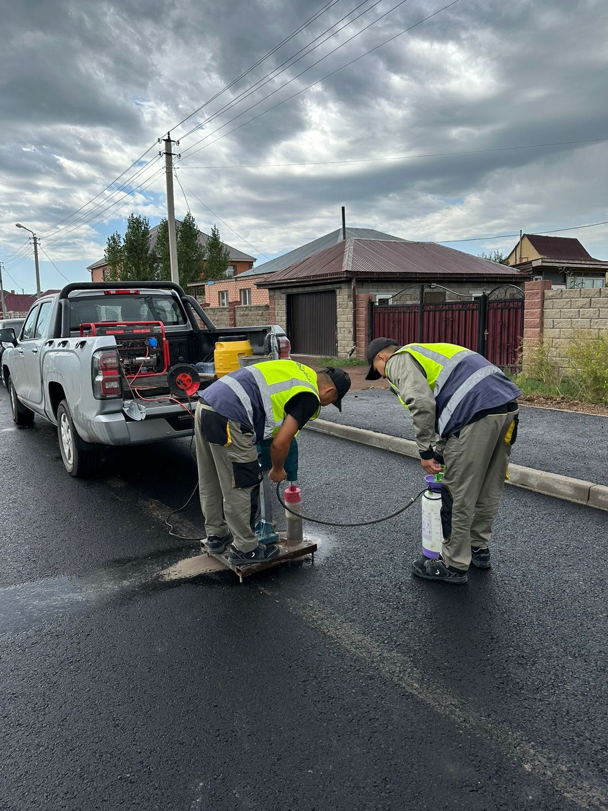
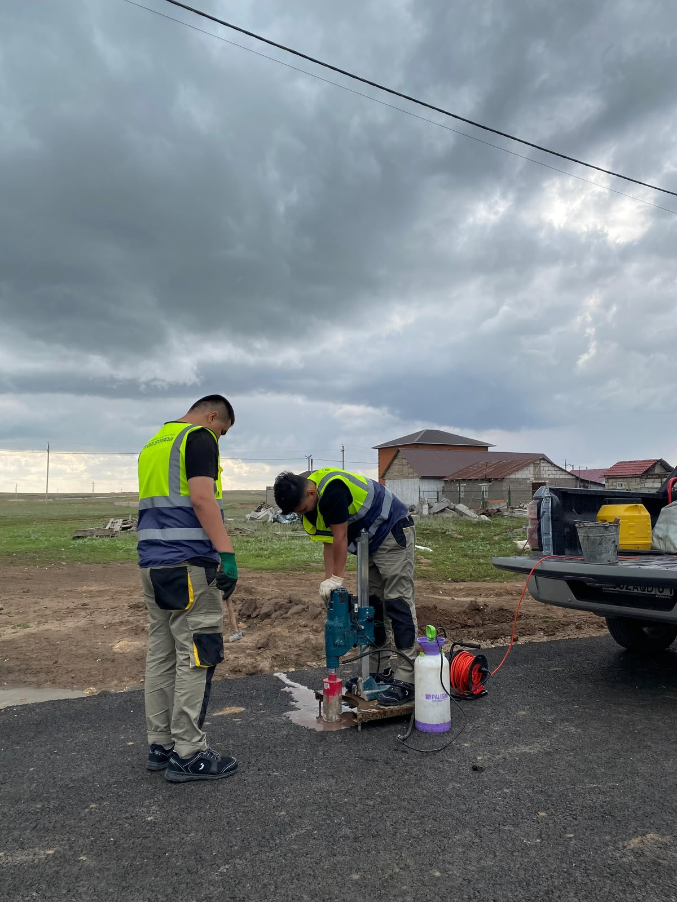

ТОЧНОСТЬ В КАЖДОМ ИСПЫТАНИИ
АККРЕДИТОВАННАЯ СТРОИТЕЛЬНАЯ ИСПЫТАТЕЛЬНАЯ ЛАБОРАТОРИЯ
Испытания строительных материалов и контроль качества строительства с выездом на объекты

В лаборатории.
На вашем объекте.
Прочная основа
вашего проекта
ТОО «КЗ Сапа Зертханасы» — строительная испытательная лаборатория в Астане. Работаем на объектах гражданского, промышленного, дорожного и инфраструктурного строительства.
Испытываем строительные материалы, выезжаем на объекты для контроля качества работ и оформляем результаты в протоколах испытаний.
УСЛУГИ ЛАБОРАТОРИИ
Испытания материалов
и контроль строительных работ
Проверяем строительные материалы до начала работ, следим за соблюдением технологии на стройке и оформляем результаты испытаний в официальных протоколах.

Контроль начинается с основания
На каких объектах проводим испытания
ПОЧЕМУ НАМ ДОВЕРЯЮТ
Компетентность в деталях.
Уверенность в результате.

Мобильная лаборатория
Выезжаем на строительные объекты, отбираем образцы и проводим предусмотренные испытания на месте. Это позволяет оперативно контролировать качество материалов и сопровождать строительные работы. Если испытания можно выполнить на площадке, доставлять образцы в лабораторию не требуется.
Написать намКак мы работаем
ОФИЦИАЛЬНО ПОДТВЕРЖДЕНО
Точность.
Компетентность.
Аккредитация.
Испытательная передвижная лаборатория аккредитована в системе аккредитации Республики Казахстан на соответствие ГОСТ ISO/IEC 17025-2019.
- Номер аттестата
- KZ.T.01.3171
- Срок действия по аттестату
- 14.08.2026 — 14.08.2031
Испытания проводятся в соответствии с областью аккредитации. Состав испытаний для вашего проекта уточните у специалистов.
ОБСУДИМ ВАШУ ЗАДАЧУ
Ваш проект.
Наш контроль качества.
Расскажите об объекте, необходимых испытаниях и сроках. Поможем определить объем лабораторного сопровождения.